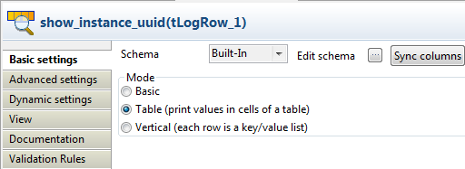

|
Famille de composant |
Business/Bonita | |
|
Fonction |
Le composant tBonitaInstantiateProcess instancie un processus existant dans un moteur Bonita Runtime puis lance l’exécution. | |
|
Objectif |
Ce composant commence l’instance d’un processus spécifique déployé dans le moteur Bonita Runtime. | |
|
Basic settings |
Schema et Edit Schema |
Peut être Built-in ou Repository Dans Talend Open Studio. Cliquez sur Edit Schema pour modifier le schéma. Notez que si vous modifiez le schéma, il devient automatiquement built-in. Pour ce composant, le schéma dépend du Module sélectionné. NoteLa colonne ProcessInstanceUUID est prédéfinie dans le schéma de ce composant et réservée à l'identifiant de l'instance du processus créée |
| Bonita version | Sélectionnez une version du moteur Bonita Runtime. | |
| Bonita Runtime Environment File |
Parcourez votre système jusqu'au fichier d'environnement de Bonita Runtime, ou saisissez son chemin d'accès. NoteCe champ est affiché uniquement lorsque vous sélectionnez la version 5.3.1 de Bonita dans la liste Bonita version. | |
| Bonita Runtime Home |
Parcourez votre système jusqu'au répertoire d'environnement de Bonita Runtime, ou saisissez son chemin d'accès. NoteCe champ est affiché uniquement lorsque vous sélectionnez la version 5.6.1 de Bonita dans la liste Bonita version. | |
|
|
Bonita Runtime Jass File |
Parcourez votre répertoire, ou saisissez le chemin d’accès au fichier jass Bonita Runtime. |
|
|
Bonita Runtime logging file |
Parcourez votre répertoire, ou saisissez le chemin d’accès au fichier de log Bonita Runtime. |
|
|
Use Process ID |
Cette case n’est pas cochée par défaut, pour activer les champs process name (nom du processus)et process version (version du processus), afin que vous puissiez saisir les informations correspondantes du processus spécifique que vous souhaitez instancier. Ces informations seront utilisées pour générer automatiquement l’ID du processus. Une fois la case cochée, le champ Process definition ID est activé, et vous pouvez saisir l’ID requis du processus. NoteL’ID du processus est créé lorsque ce processus est déployé dans le moteur Bonita Runtime. |
|
|
User name |
Saisissez l’identifiant utilisé pour instancier ce processus.. |
|
|
Password |
Saisissez le mot de passe utilisé pour instancier ce processus. |
|
|
Die on error |
Cette case n’est pas cochée par défaut, pour terminer le traitement avec les lignes sans erreurs, et ignorer les lignes en erreur. |
|
Advanced settings |
tStatCatcher Statistics |
Cochez cette case pour collecter les métadonnées de traitement du Job au niveau du Job ainsi qu’au niveau de chaque composant. |
|
Utilisation |
Ce composant est généralement utilisé en standalone ou en tant que composant de sortie. | |
|
Connections |
|
Liens de sortie (d’un composant à un autre) : Row : Main (fournit les paramètres de sortie à partir du processus). Trigger : Run if, OnComponentOk, OnComponentError, OnSubjobOk, OnSubjobError.
Liens d’entrée (d’un composant à un autre) : Row : Main. Trigger : Run if, OnComponentOk, OnComponentError, OnSubjobOk, OnSubjobError
Pour plus d’informations concernant les connexions, consultez le Guide utilisateur de Talend Open Studio. |
|
Global Variables |
|
Process Definition UUID : Indique le numéro d’ID du processus déployé. Disponible en tant que variable Flow et peut être récupéré par le lien de sortie Row > Main. Retourne une chaîne de caractères.
Pour plus d’informations concernant les variables, consultez le Guide utilisateur de Talend Open Studio. |
|
Limitation |
n/a | |
Ce scénario décrit un Job déployant un processus Bonita dans le moteur Bonita Runtime et exécutant ce processus, dans lequel une requête sur le personnel est traitée.

Ce Job utilise trois composants.
- Un tBonitaDeploy : ce composant déploie un processus Bonita dans le moteur Bonita Runtime.
- Un tFixedFlowInput : ce composant génère le schéma utilisé comme paramètre d’exécution du processus déployé.
- Un tBonitaInstantiateProcess : ce composant exécute le processus déployé.
Note
Lorsque vous générez un schéma à l’aide d’un tFixedFlowInput, les noms de colonnes du schéma doivent être identiques à ceux des paramètres Bonita utilisés pour exécuter le même processus dans Bonita.
Avant de commencer à reproduire ce schéma, préparez votre fichier Bonita .bar, c’est-à-dire le processus exporté du système Bonita et qui sera déployé dans le moteur Bonita Runtime. Dans ce scénario, ce fichier est TEST--4.0.bar. Ce processus peut être vérifié via l’interface Bonita.

Pour reproduire ce scénario, procédez comme suit :
Déposez les composants tBonitaDeploy, tFixedFlowInput et tBonitaInstantiateProcess de la Palette dans l’espace de modélisation graphique.
Cliquez-droit sur le composant tBonitaDeploy pour ouvrir son menu contextuel.
Sélectionnez Trigger > OnSubjobOk pour relier le tBonitaDeploy au tFixedFlowInput.
Cliquez-droit sur le tFixedFlowInput pour ouvrir son menu contextuel et sélectionnez Row > Main pour relier ce composant au tBonitaInstantiateProcess, à l’aide d’un lien Main.
Pour reproduire ce scénario, procédez comme suit :
Double-cliquez sur le tBonitaDeploy afin d’ouvrir sa vue Basic settings.

Sélectionnez la version 5.3.1 de Bonita dans la liste Bonita version. La version sélectionnée doit être la même que celle du moteur Bonita Runtime que vous utilisez.
Dans la zone Bonita Runtime Configuration, parcourez votre répertoire de fichiers de variables Bonita Runtime. Dans le champ Bonita Runtime Environment file, parcourez votre répertoire jusqu’au fichier bonita-environnement.xml. Dans le champ Bonita Runtime Jaas File, parcourez votre répertoire jusqu’au fichier jaas-standard.cfg. Dans le champ Bonita Runtime Logging File, parcourez votre répertoire jusqu’au fichier logging.properties.
Note
Pour les utilisateurs de la version 5.2.3 de Bonita, seuls les champs Bonita Runtime Jaas File et Bonita Runtime Logging File sont à renseigner.

Pour les utilisateurs de la version 5.6.1 de Bonita, parcourez votre système afin de renseigner le champ Bonita Runtime Home avec le répertoire d'environnement de Bonita Runtime.

Dans le champ Business Archive, parcourez votre répertoire jusqu’au fichier Bonita .bar, qui est le processus exporté de votre système Bonita et sera déployé dans le moteur Bonita Runtime.
Dans les champs Username et Password, saisissez vos informations de connexion à Bonita.
Double-cliquez sur le composant tFixedFlowInput afin d’ouvrir sa vue Basic settings.

Cliquez sur le bouton [...] à côté du champ Edit schema pour ouvrir l’éditeur du schéma.

Dans l’éditeur du schéma, cliquez sur le bouton [+] pour ajouter une ligne.
Cliquez sur la nouvelle ligne et saisissez son nom : name et ciquez sur OK.
Dans la zone Mode de la vue Basic settings, sélectionnez l’option Use inline table puis cliquez sur le bouton [+] afin d’ajouter une ligne.
Dans le tableau, cliquez sur la ligne ajoutée et saisissez entre guillemets le nom de la personne de votre personnel : ychen, dont la requête sera traitée par le processus déployé.
Double-cliquez sur le composant tBonitaInstantiateProcess afin d’ouvrir sa vue Basic settings.

Sélectionnez la version 5.3.1 de Bonita dans la liste Bonita version. La version sélectionnée doit être la même que celle du moteur Bonita Runtime que vous utilisez.
Dans la zone Bonita Runtime Configuration, parcourez votre répertoire de fichiers de variables Bonita Runtime. Dans le champ Bonita Runtime Environment file, parcourez votre répertoire jusqu’au fichier bonita-environnement.xml. Dans le champ Bonita Runtime Jaas File, parcourez votre répertoire jusqu’au fichier jaas-standard.cfg. Dans le champ Bonita Runtime Logging File, parcourez votre répertoire jusqu’au fichier logging.properties.
Note
Pour les utilisateurs de la version 5.2.3 de Bonita, seuls les champs Bonita Runtime Jaas File et Bonita Runtime Logging File sont à renseigner.
Pour les utilisateurs de la version 5.6.1 de Bonita, parcourez votre système afin de renseigner le champ Bonita Runtime Home avec le répertoire d'environnement de Bonita Runtime.
Cochez la case Use Process ID pour activer le champ Process Definition Id.
Dans le champ Process Definition Id, cliquez entre les guillemets et appuyez sur Ctrl+Espace afin d’ouvrir la liste d’autocomplétion contenant les variables globales disponibles pour ce Job.
Double-cliquez sur la variable que vous souhaitez utiliser pour l’ajouter entre les guillemets. Dans ce scénario, double-cliquez sur tBonitaDeploy_1_ProcessDefinitionUUID, qui récupère l’ID de définition du processus déployé par le composant tBonitaDeploy.
Note
Si le processus a été déployé et que le tBonitaDeploy n’est pas utilisé, décochez la case Use Process ID afin d’activer les champs Process name et Process version et remplir les informations correspondantes. Le tBonitaInstantiateProcess concatène le nom et la version du processus que vous avez saisis lors de la construction de l’ID du processus.
Dans les champs Username et Password, saisissez respectivement votre identifiant et votre mot de passe de connexion à Bonita.

Ce scénario déploie un processus Bonita dans Bonita Runtime, démarre une instance et écrit en sortie l'UUID de l'instance du processus via le lien Row > Main.
Déposez de la Palette dans l'espace de modélisation graphique un composant tBonitaDeploy, un tBonitaInstantiateProcess et un tLogRow.
Renommez le tBonitaDeploy en deploy_process, le tBonitaInstantiateProcess en start_instance et le tLogRow en show_instance_uuid.
Reliez le composant tBonitaDeploy au tBonitaInstantiateProcess à l'aide d'un lien OnSubjobOk.
Reliez le tBonitaInstantiateProcess au tLogRow à l'aide d'un lienRow > Main.

Double-cliquez sur le composant tBonitaDeploy pour ouvrir sa vue Basic settings.

Dans le champ Bonita Runtime Jaas File, spécifiez le chemin d'accès et le nom du fichier jaas.
Dans le champ Bonita Runtime Logging File, spécifiez le chemin d'accès et le nom du fichier de log.
Dans le champ Business Archive, spécifiez le chemin d'accès et le nom du processus Bonita.
Dans les champs Username et Password, saisissez vos informations d'authentification.
Double-cliquez sur le tBonitaInstantiateProcess pour ouvrir sa vue Basic settings.

Dans le champ Bonita Runtime Jaas File, spécifiez le chemin d'accès et le nom du fichier jaas.
Dans le champ Bonita Runtime Logging File, spécifiez le chemin d'accès et le nom du fichier de log.
Dans les champs Process Name et Process Version, saisissez les informations de processus.
Dans les champs Username et Password, saisissez vos informations d'authentification.
Double-cliquez sur le tLogRow pour ouvrir sa vue Basic settings.
Dans la zone Mode, sélectionnez Table (print values in cells of a table pour obtenir un meilleur affichage.